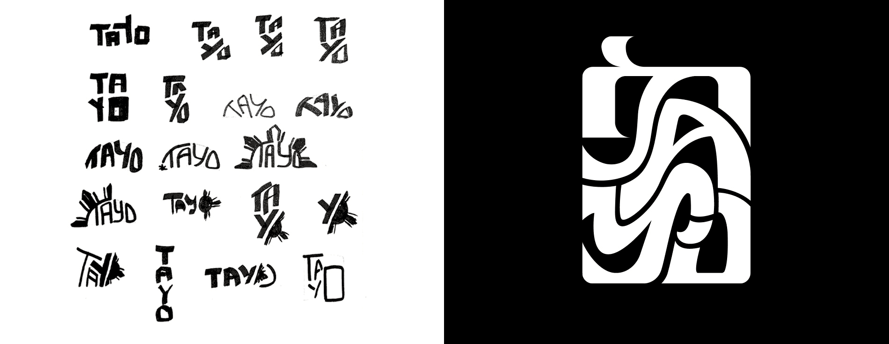
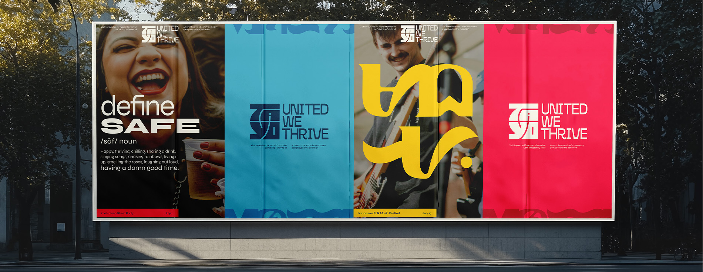
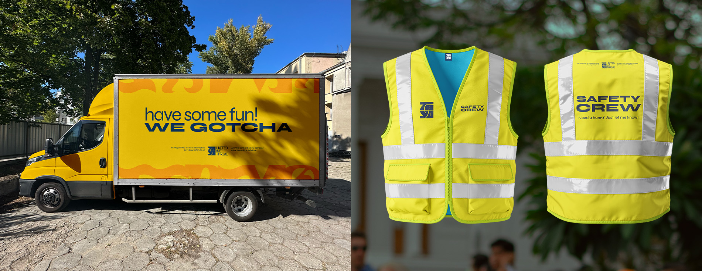
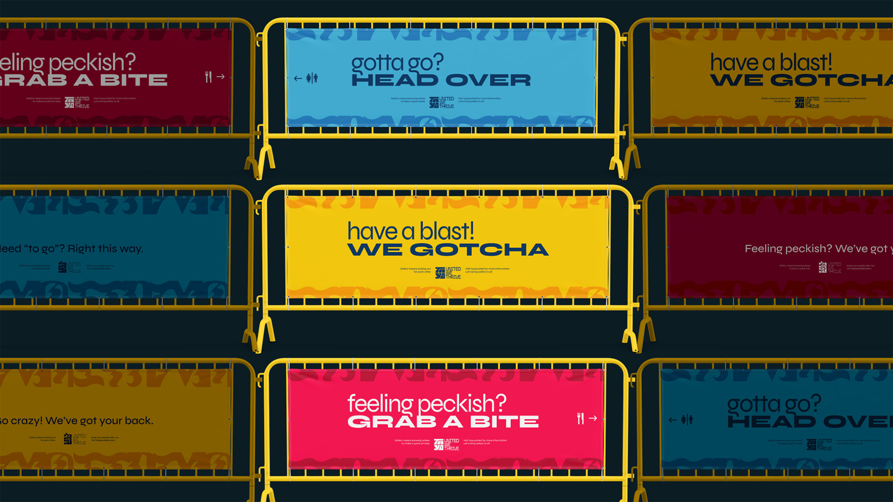
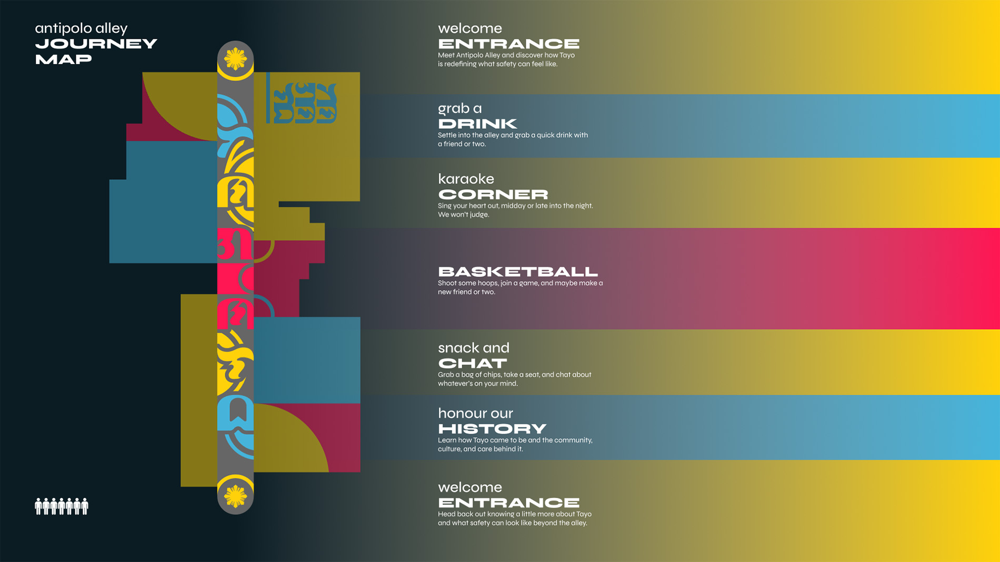

GOING BEYOND THE DEFINITION
Founded in response to the 2025 Lapu Lapu Festival car attack, Tayo is an event care and safety company redefining safety through trust, community, and compassion. Inspired by Filipino culture, Tayo creates spaces where people can celebrate freely and confidently, ensuring safety extends beyond physical protection to emotional well-being.

CRAFTING THE LOGO
The name “Tayo” was chosen for the dual meaning the word holds. Depending on its pronunciation, “tayo” can mean either “us” or “to stand,” reflecting Tayo’s goal of standing and rising together as a community. Pulling from the traditional Filipino writing system Baybayin, the logo’s curves echo the forms of its characters while grounding the brand in Filipino culture.


MAKING SAFETY FEEL SAFE
Tayo highlights the joy of celebration as an essential part of feeling safe. When people feel truly safe, they have the freedom to express themselves without fear of harm. With Baybayin graphics and patterns serving as a symbol of strength and protection paired with colours of the Filipino flag, Tayo assures crowds that they are free to be themselves, celebrate openly, and trust that they are being cared for.

INTRODUCING... ANTIPOLO ALLEY
Named after a culturally rich city in the Philippines, Antipolo Alley is an extension of Tayo’s mission. It aims to uplift and expand the meaning of safety in our everyday. Honouring the safety of our people goes beyond watching over them at events and festivals. That same feeling of care should carry into the streets we walk, run, and play in.
Antipolo Alley is here to honour that.

-
With every project I scrounge up and every tale I weave, there’s one thing at the heart of it all: creating for the everyday person and the communities they call home.